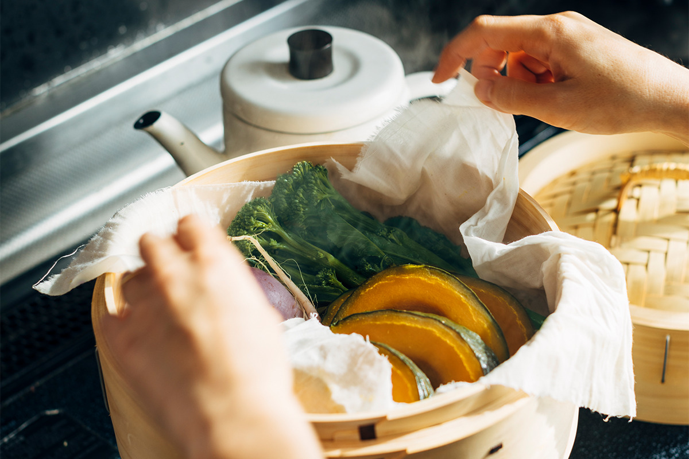
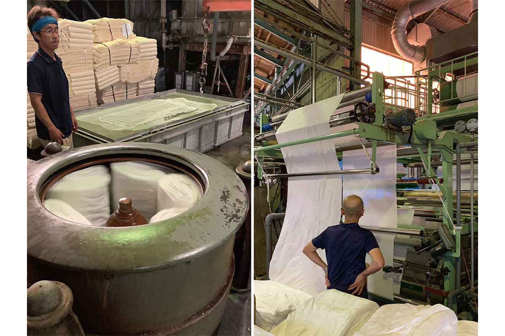
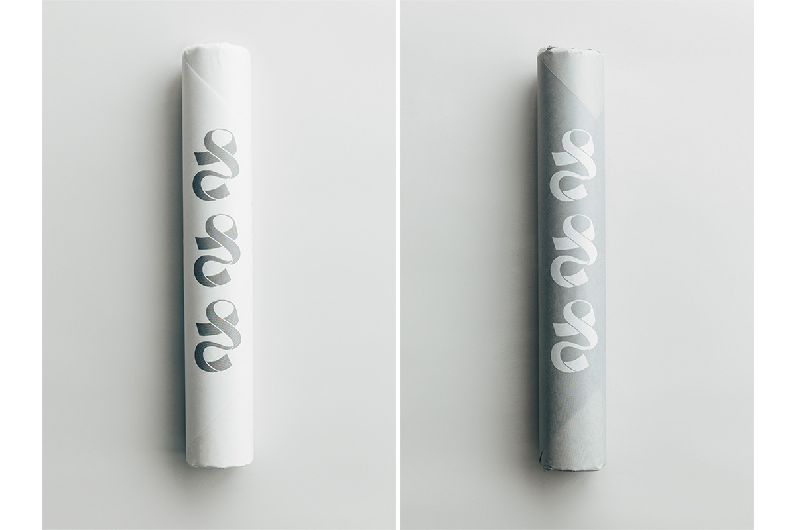
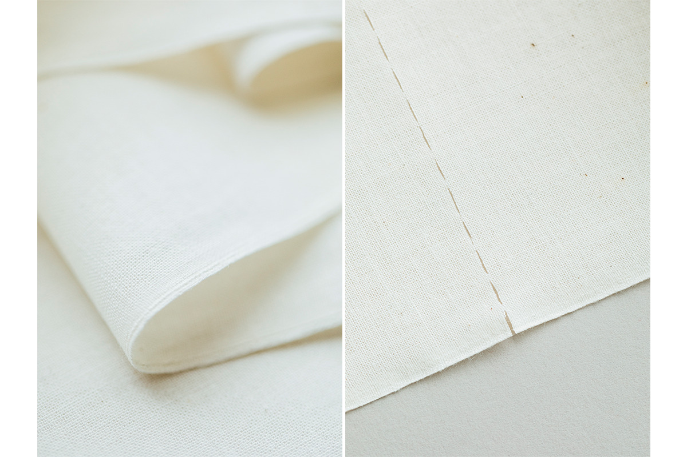
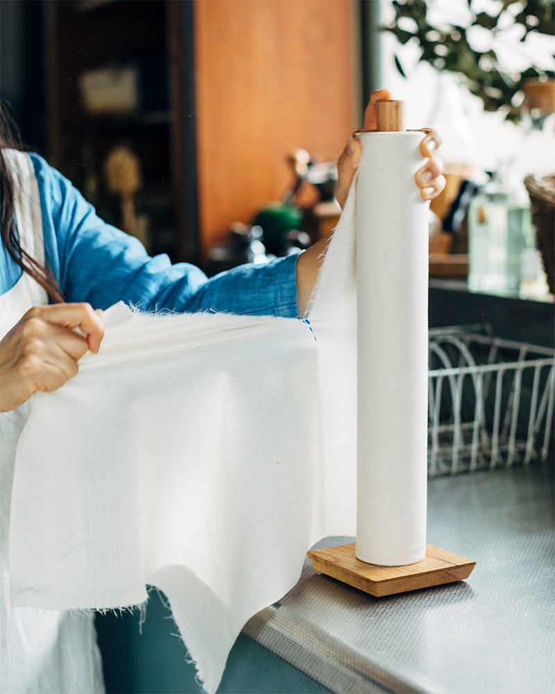
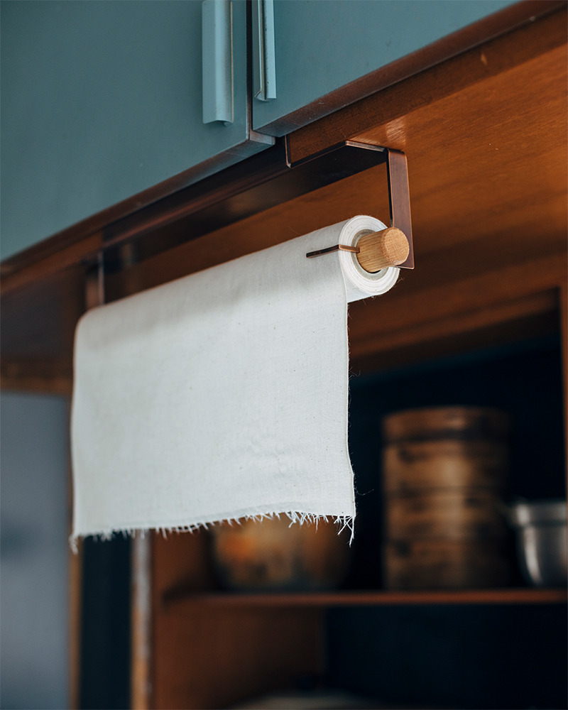
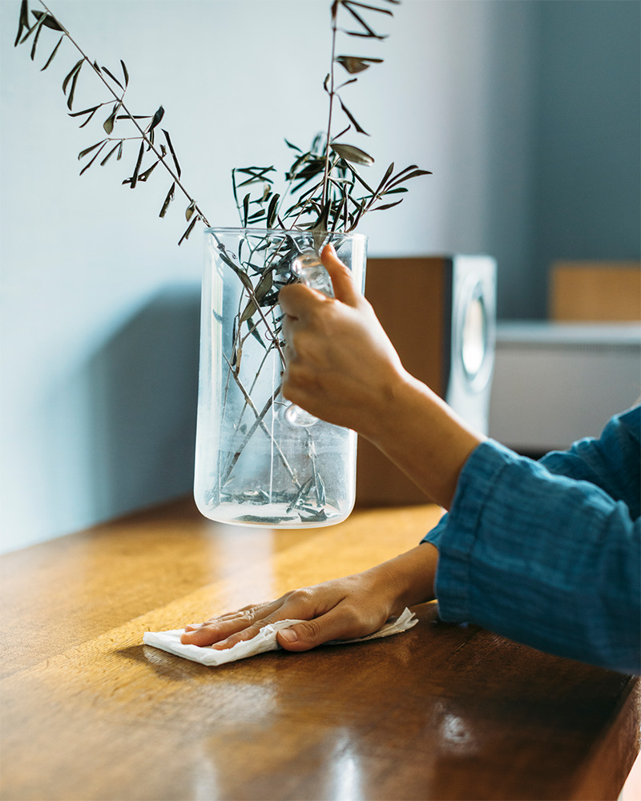

Префектура Осака · Сакаи · ремесло
«Сасаса»: хлопковая ткань сараси из Сакаи в рулоне, как бумажное полотенце

Сараси, белёную хлопковую ткань, в Японии веками пускали на полотенца, ночные кимоно и пелёнки. Фабрика из Сакаи свернула её в рулон, который висит на кухне, как бумажные полотенца, только стирается и служит долго.
Фабрика
Белёный хлопок из края Идзуми
«Сасаса» это марка фабрики «Такэда сараси», которую основали в 1911 году. Фабрика стоит в Сакаи, старом торговом городе к югу от Осаки, в краю, который исторически называется Идзуми. Ткань, сделанную здесь, на фабрике называют «Идзуми васараси», то есть японским белёным хлопком из Идзуми.
Из сараси испокон веку шили тэнугуи, лёгкие полотенца, ночную одежду, пелёнки: вещи, без которых не обходился ни один дом. На «Такэда сараси» ткань обрабатывают по собственной технологии и следят за тем, чтобы производство меньше вредило природе. Идзуми васараси давно связана с ремёслами Осаки: такую ткань хорошо красить и ткать из неё дальше.

Название марки взято из японского «са-са-сатто», то есть «быстро, в два счёта». Идея проста: ткань, которую можно схватить и пустить в дело в любую минуту. За этим стоит и задача посерьёзнее: сохранить старую технологию для следующих поколений и дать работу местной отрасли.
Рулон
Ткань, которую отрывают по длине
Для рулона берут ткань «окакидзи», мягкого сливочного цвета, с плотным мелким плетением, гладкую и хорошо пропускающую воздух. Ею вытирают посуду, пользуются ею при готовке и в других делах, так что одного рулона хватает почти на всю уборку и кухню.

Упаковка простая, но в ней чувствуется японская мягкость, а в логотипе угадывается сама белёная ткань. В 2020 году рулон «Сасаса» вошёл в «лучшую сотню» японской премии «Гуд дизайн».
Вариантов два. Оба это полоса ткани шириной 360 мм и длиной 7 м, свёрнутая в рулон. У «Фри» перфорации нет, и ткань отрезают ножницами там, где нужно. «Кат» разделён перфорацией, и кусок просто отрывают по линии. Выбирают по тому, как удобнее, а использованный отрез стирают и берут снова.

Для дома
Стойка и держатель из дуба
Для рулона сделали два аксессуара из массива дуба. Вертикальная стойка лёгкая, её переносят куда угодно и ставят там, где нужна ткань. Когда отрываешь кусок, рулон удобно придерживать пальцем, а места стойка занимает совсем немного. С рулоном «Кат» она стоила 6600 иен с налогом в 2021 году.


Подвесной держатель надевают на кухонную полку без шурупов и креплений. Г-образная металлическая планка повторяет форму большого пальца, так что ткань легко придержать и оторвать, а бронзовое покрытие хорошо смотрится рядом с дубом. С рулоном «Кат» держатель стоил 13 200 иен с налогом в 2021 году.

Рулон «Сасаса» это старая японская вещь первой необходимости, которую заново придумали для сегодняшнего дома.
«Сасаса» (фабрика «Такэда сараси»)
- Адрес
- префектура Осака, Сакаи, район Нака, Кэана-тё, 197-2
- Телефон
- +81 72-271-0504
- Цены / Вход
- рулон без перфорации 1980 иен, с перфорацией 2420 иен, стойка с рулоном 6600 иен, держатель с рулоном 13 200 иен (с налогом, по оригиналу 2021 года)
- Сайт
- sa-sa-sa.jp